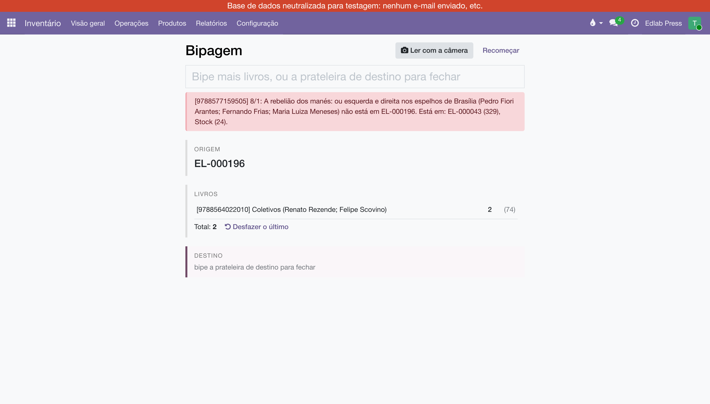

Bipagem entre prateleiras
Mover livros de uma prateleira para outra com o leitor na mão, na ordem em que o corpo faz: de onde, o quê, para onde. Três bipes e a transferência interna nasce validada — sem autocompletar, sem digitar quantidade.
Onde fica?
Em . É uma tela com um campo só, sempre em foco: o que entra nele decide o passo. Funciona com leitor de mão (USB ou Bluetooth, no modo teclado, que digita o código e dá Enter) e com a câmera do celular.

Como movo livros?
- Bipe a prateleira de origem — a etiqueta da prateleira de onde os livros saem (EL-000196). Bipar outra prateleira antes de qualquer livro troca a origem.
- Bipe os livros, um a um — pelo ISBN da contracapa. O mesmo livro de novo soma um na mesma linha; entre parênteses, quantos há dele naquela prateleira. Livro que não está na prateleira de origem é recusado na hora, com a lista de onde ele está.
- Bipe a prateleira de destino — e pronto: a transferência interna é criada, reservada e validada no mesmo bipe. A tela diz o número dela e volta ao passo 1.

Dois botões para errar sem medo: Desfazer o último tira o último bipe, e Recomeçar limpa tudo sem gravar nada. Nada é gravado antes do bipe do destino.
E pela câmera do celular?
Clique em Ler com a câmera, aponte para a etiqueta ou para o ISBN; cada leitura é um bipe, e a mesma leitura repetida em sequência conta uma vez só. A câmera só abre em endereço seguro (https), que é como o sistema é servido fora da casa.
De onde vêm as etiquetas das prateleiras?
Toda prateleira tem o próprio código como código de barras (EL-000196), dado na instalação e a cada prateleira nova. Para imprimir, em marque as prateleiras e use . A etiqueta antiga, com o nome completo (EL-VG/Stock/EL-000196), também é aceita.
O que a bipagem não deixa fazer
| O que aparece | Por quê | O que fazer |
|---|---|---|
| "… não é prateleira do armazém" | O código é da raiz, de um local de vista ou da prateleira de consignação de um cliente. | Bipe uma prateleira do armazém. Livro para a prateleira do cliente vai pelo Pedido C. |
| "… não está em EL-000196. Está em: …" | O livro não está na prateleira de origem aberta. | Ou o livro, ou a origem está errada. A mensagem diz onde ele está. |
| "… só há N em …" | Você bipou mais exemplares do que a prateleira tem. | Confira a contagem na prateleira; se faltar no sistema, é inventário, não transferência. |
| "Código desconhecido" | Nem prateleira, nem livro cadastrado com esse ISBN. | Confira a etiqueta. Livro sem ISBN no cadastro precisa do Editorial. |
A transferência que a bipagem cria passa pelas mesmas regras da transferência interna comum — veja Prateleiras e transferências internas. A origem é sempre uma prateleira exata, nunca a raiz, então a armadilha da raiz não existe aqui.